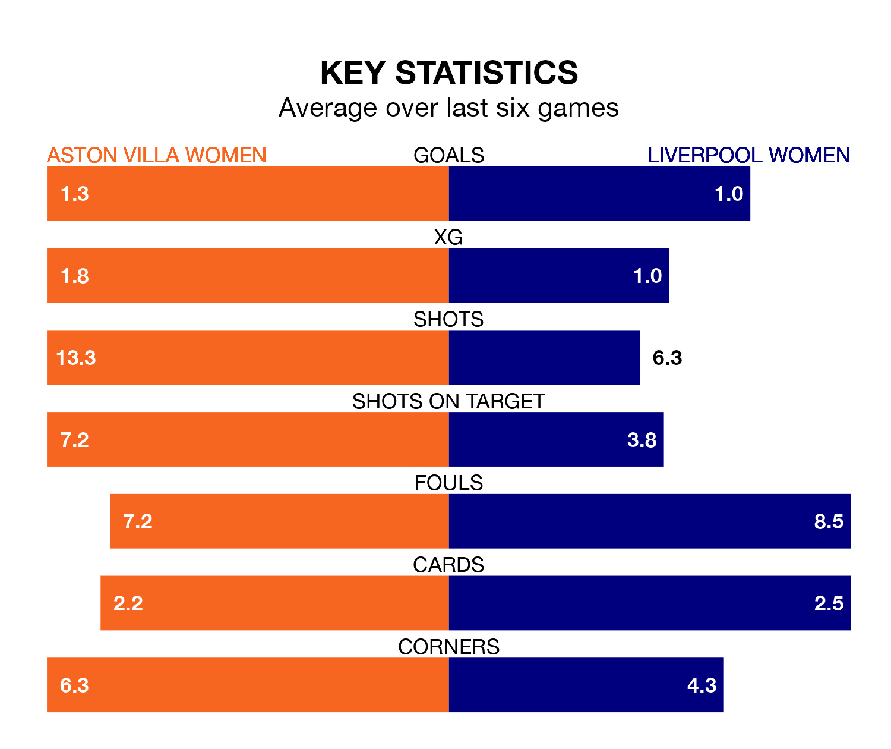

Liverpool Women travel to Aston Villa Women on early Sunday in the FA Women's Super League.
The visitors come into the game on the back of a win in their last match, having beaten Brighton and Hove Albion Women 1-0 away, with a goal from Ceri Holland.
The Villa also won their last match, 2-1 against Tottenham Hotspur Women, with their goals scored by Adriana Leon and Jordan Nobbs.
In the last 10 years, Aston Villa and Liverpool have played each other on six occasions. They won two each, and they drew twice.
On average, the Villa scored 1.3 goals and Liverpool 1.8 in those matches.
Their last meeting was on October 8, when Liverpool won 2-0 at home.
With Rachael Laws between the sticks, Liverpool can rely on one of the league's safest pair of hands. She has kept three clean sheets in her 10 appearances this season, and only two other 'keepers – Manchester City Women's Khiara Keating and Manchester United Women's Mary Earps – have been able to prevent the opposition scoring on more occasions in the FA Women's Super League.
In Aston Villa's net, Daphne van Domselaar has two clean sheets in 13 games. She has conceded a goal every 49 minutes, 70% more often than the 82 minutes between goals for Laws.
With 18 goals in 14 games so far this season, the Villa are scoring at below the league average rate with 1.3 goals per game. And they are conceding more than average, letting in 27 goals at a rate of 1.9 per game.
The away side are also below average scorers, with 1.3 goals per game, compared to a league average of 1.6. They have conceded 1.4 goals per game.
The hosts are eighth in the table after 14 games, of which they have won five and drawn one, earning 16 points.
Liverpool are three places ahead of Aston Villa in fifth, with six wins and four draws putting them on 22 points.
Aston Villa are in mixed form in the FA Women's Super League, with three wins and a draw from their last six games.
With two wins and two draws over that period, Liverpool's form is slightly worse – they have taken eight points from 18, compared to the Villa's 10.
Updated: 12:18 (UTC), 19/02/24